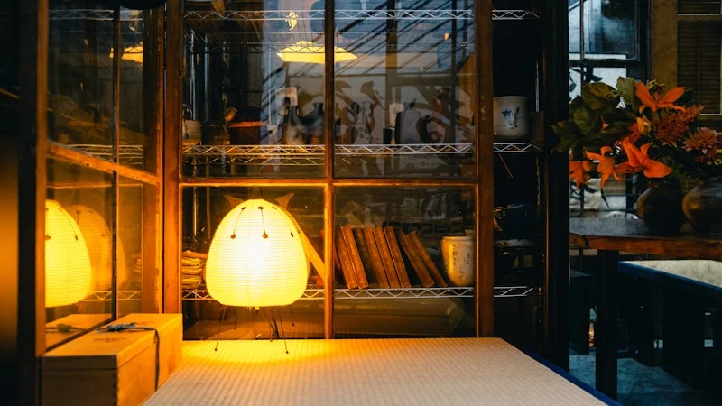

「朝起きた瞬間から疲れている」あなたへ。自律神経を整え冷えを解消する東洋医学の温活セルフケア
2026.06.27

朝、目覚まし時計の音で目が覚めた瞬間から、すでに体が鉛のように重い。布団から起き上がるのが億劫で、手足の指先はまるで氷のように冷え切っている……。そんな「慢性的なだるさ」や「冷え」に、日々悩まされてはいませんか？
「寝不足のせい」「季節の変わり目だから仕方がない」と諦めて、一時的なマッサージや栄養ドリンクで誤魔化してしまう方も少なくありません。しかし、その疲れと冷えは、あなたの身体が限界を迎えているサインです。本記事では、東洋医学と自律神経の専門家として、その不調の根本原因を医学的メカニズムから紐解き、明日からすぐに自宅で実践できる、効果的な温活セルフケアを具体的にお伝えします。植物のちからを借りて、本来の「心地よいわたし」を取り戻す一歩を踏み出してみましょう。

なぜ不調が起きるのか？「慢性的な疲労と冷え」の医学的・東洋医学的メカニズム
朝起きた瞬間から疲れているという症状の背景には、「交感神経の過剰な働きによる末梢血管の収縮」があります。日中のストレスや寒暖差、PC・スマートフォンの見すぎによって自律神経のバランスが崩れ、交感神経が優位な状態が続くと、全身の血管が強く収縮します。すると、心臓から最も遠い手足の末梢血管まで温かい血液が十分に届かなくなり、深刻な冷えが発生します。
血液には、酸素や栄養を細胞に届け、代わりに不要な老廃物や疲労物質を回収するという重要な役割があります。血管が収縮して血流が滞ると、回収されずに体内に蓄積した老廃物が「慢性的な疲労感」や「だるさ」の物理的な正体となるのです。また、夜間も交感神経が優位なままだと、深部体温が下がらず、睡眠の質が著しく低下して不眠のスパイラルに陥ります。
この状態を東洋医学では、生命エネルギーである「気（き）」と、全身に栄養を運ぶ「血（けつ）」が巡らなくなった「気滞（きたい）」および「血瘀（けつお）」と捉えます。特に、体を温めるエネルギーである「陽気」が不足する「陽虚（ようきょ）」に陥ると、体温維持や水分代謝（水・すい）がスムーズに行かなくなり、重だるい冷えが定着してしまいます。五臓六腑のうち、水分代謝を司る「腎（じん）」と、エネルギーを作り出す「脾（ひ・胃腸）」の経絡（エネルギーの通り道）を整えることが、根本的な解決への近道なのです。
明日から無料でできる！自律神経を整える温活養生アクション3選
1. 経絡を整えて血流を促す「三陰交」と「湧泉」のツボ押し
東洋医学に基づき、冷えと自律神経に最もアプローチしやすいツボを2つ刺激します。道具を使わず、寝る前の布団の中でも行える養生法です。
- 手順：
- 三陰交（さんいんこう）：内くるぶしの最も高いところから、指幅4本分上がった骨のキワにあるツボです。両手の親指を重ねてツボに当て、息を吐きながら3秒かけてじんわりと押し、3秒かけてゆっくり離します。これを左右5回ずつ繰り返します。
- 湧泉（ゆうせん）：足の裏の土踏まずからやや上、足の指を内側に曲げたときに最も凹む場所にあります。ここを親指の頭を使って、少し強めに5秒押し、5秒離す動作を5回繰り返します。
- なぜ効くのか（根拠）： 三陰交は、消化器系の「脾経」、精神安定に関わる「肝経」、水分代謝や生命力を司る「腎経」の3つの経絡が交わる極めて重要なツボです。ここを刺激することで骨盤内の血流が促進され、女性ホルモンのバランスや自律神経が整います。また、湧泉は「腎経」の起点となるツボであり、刺激することで体全体の水分代謝を促し、物理的に末梢血管を拡張させて全身の冷えを解消する効果があります。
実践のヒント
お風呂上がりなど、体がすでに温まっているタイミングで行うと、経絡が通りやすくなり、ツボ押しの効果が倍増します。心地よいと感じる強さで行うのがポイントです。
2. 深部体温を下げて良質な睡眠へ導く「4-7-8呼吸法」
交感神経から副交感神経へと強制的にスイッチを切り替え、血管を拡張させる呼吸法です。ベッドに入って仰向けの状態で行います。
- 手順： 完全に息を吐ききった後、鼻から4秒間かけて息を吸い込みます。次に、息をしっかりと7秒間止めます。最後に8秒間かけて、口から「ふぅー」と音を立てながらゆっくりと息を吐き出します。このサイクルを4回繰り返します。
- なぜ効くのか（根拠）： 息を意識的に止めてから長く吐き出すことで、脳が「リラックス状態である」と錯覚し、自律神経のブレーキ役である「副交感神経」が優位になります。副交感神経が優位になると、日中に収縮していた全身の血管が緩んで拡張し、手足の先まで温かい血液が巡ります。これにより、体の「深部体温」が手足の皮膚から放熱され、自然な眠気が誘発されるようになります。心拍数や血圧も低下し、睡眠の質が劇的に向上します。
3. 朝一番の「白湯（さゆ）をすする10分間のマインドフルネス」
朝起きて最初に胃腸を物理的に温めることで、1日の自律神経のリズムを整え、代謝のスイッチを入れる養生法です。
- 手順： やかんで一度しっかり沸騰させたお湯を、50℃〜60℃程度（少し熱いと感じる程度）まで冷まします。朝一番にマグカップ1杯の白湯を用意し、一気に飲むのではなく、10分ほど時間をかけてすするようにゆっくりと飲みます。飲むときは、温かいお湯が食道から胃、腸へと染み渡っていく「温かさの感覚」に全神経を集中させてみましょう。
- なぜ効くのか（根拠）： 起床直後は、1日の中で最も体温が低く、内臓の働きも低下しています。ここに温かい水分を直接届けることで、内臓体温が約1度上昇します。内臓が温まることで副交感神経が心地よく刺激され、消化管の蠕動運動が活発になります。東洋医学において、胃腸（脾胃）を温めることは、食物から「気」や「血」を作り出す力を高める基本中の基本。自律神経のメリハリがつき、午前中の重だるさが軽減されます。
実践のヒント
白湯を飲んでいる10分間は、スマートフォンやテレビは見ず、お湯の温かさと静かな朝の空気だけを感じるようにしてください。この短い「脳の休息（マインドフルネス）」が、脳疲労を解消し、自律神経の安定をさらにサポートします。
植物のちからを借りて、「ふくふく」とした本来のわたしへ
「朝から体がだるい」「手足が冷えて眠れない」という不調は、決してあなたの頑張りが足りないせいではありません。毎日忙しく、自分以外の誰かや何かのためにエネルギーを使い果たしている証拠です。今回ご紹介したツボ押し、呼吸法、そして朝の白湯。どれもお金をかけずに、明日からすぐに始められる素晴らしい養生法です。まずはご自身の体と向き合う数分間を、大切に作ってみてください。
しかし、どうしても忙しくてそんなセルフケアの時間さえ取れない日や、疲れ果ててベッドに倒れ込みたい夜もあるでしょう。そんな時は、毎日の入浴時間を、手軽な極上のセルフケア時間へと変えてみませんか？
セルフケアブランド「fucuu（フクウ）」がお届けするのは、余計なものを一切加えない、100%天然・無添加の生薬入浴剤です。生薬のトウキやセンキュウ、シャクヤクなどが温浴効果を高め、お湯に浸かるだけで全身の血行を促進。芯から体を温めて自律神経を穏やかに整えます。お風呂の湯気に広がる国産アロマの香りに包まれる時間は、まさに「植物のちからで 'わたしに戻る' 時間」。慌ただしい日常から離れ、心も体も「ふくふく」とした幸福感で満たされる温活を、fucuuと共に始めてみませんか。
fucuuの生薬入浴剤・国産アロマは、BASEオンラインショップでご購入いただけます。
BASEで購入する